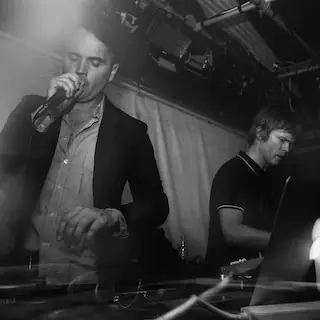

United Kingdom: Evolution of Homegrown Electronic Music Genres
From Raves to Radiowaves
🎧 A Beat That Started Underground — Now It Owns the World
Let’s be honest—nobody stumbles into a rave and leaves unchanged. And when it comes to raves, rebellion, and genre-defining sound, the UK is… well, kind of the blueprint.
From industrial factory beats to emotive lo-fi electronica, the United Kingdom has birthed, broken, and rebuilt more electronic music genres than most countries have biscuits.
In this sonic saga, we chronicle how an island obsessed with sound systems, DIY ethics, and way too much tea became the undisputed global lab of electronic innovation.
Also: yes, I make music too. And yes, you can shamelessly vibe to it while reading this.
🇬🇧 A Timeline of the UK’s Most Influential Electronic Music Styles
1980s: Industrial Techno (Birmingham)
Forged in the brutalist shadow of post-industrial Birmingham, Industrial Techno wasn’t just music—it was machinery turned emotional. Cold, mechanical rhythms pounded like factory presses, layered with metallic textures that evoked a dystopian Britain.
Artists like Surgeon and Regis channeled the city’s bleak skyline into hypnotic, unrelenting tracks that felt more architectural than musical.
Roots: Industrial, EBM, Techno
Key Pioneers: Surgeon, Regis
Region: Birmingham, UK
Insight: A darker, heavier form of techno with mechanical and dystopian aesthetics, distinct from its Detroit origins.
1988: Bleep Techno (Sheffield)
While Detroit looked toward the stars, Sheffield looked inward. Bleep Techno emerged as the UK’s first fully homegrown electronic genre—clean, minimal, and deeply bass-driven. With tiny melodic “bleeps” riding atop sub-bass inspired by Jamaican sound system culture, it carved a new path between funk and futurism. Labels like Warp were essential to this movement, and producers like LFO and Forgemasters made tracks that still sound futuristic.
Roots: Acid House, Detroit Techno
Key Pioneers: LFO, Nightmares on Wax
Region: Sheffield, UK
Insight: One of the first uniquely British electronic styles, featuring deep bass, minimal melodies, and futuristic beats.
1990: UK Hardcore Rave (Nationwide)
Hardcore Rave was the UK’s answer to euphoric chaos. Screaming breakbeats, helium-pitched vocals, rave stabs, and maximum energy defined this era. It was wild, anarchic, and utterly communal—a messy, beautiful release for thousands packed into warehouses and muddy fields. Acts like The Prodigy, SL2, and Altern-8 brought the rave energy to the mainstream while still repping the underground.
Roots: Acid House, Breakbeats, Techno
Key Pioneers: The Prodigy, SL2, Altern-8
Region: Nationwide, UK
Insight: The UK’s high-energy response to Acid House, characterized by fast breakbeats, heavy bass, and a strong rave culture.
1992: Jungle (London)
Emerging from London’s multicultural neighborhoods, Jungle fused breakbeat hardcore with reggae, dancehall, and dub. It was fast, political, and packed with sub-bass pressure. Jungle’s rhythmic complexity was only matched by its sense of identity—deeply rooted in Black British culture, pirate radio, and the DIY ethos of the underground. It was London on vinyl—raw, fast, and furious.
Roots: UK Hardcore, Reggae & Dancehall, Hip-Hop, Sound System Culture
Key Pioneers: Shy FX, LTJ Bukem, Congo Natty
Region: London, UK
Insight: A fusion of breakbeats with reggae influences, developed within London’s Afro-Caribbean communities.
1994: Drum & Bass
Taking Jungle’s raw power and refining it into high-speed sound design, Drum & Bass became a sonic science. Its diversity grew rapidly: from the jazzy atmospheres of liquid DnB to the aggressive precision of neurofunk. With artists like Goldie injecting drama and Andy C mastering the mix, DnB evolved into one of the most technically sophisticated dance genres on earth.
Roots: Jungle, Reggae & Dub, Breakbeats
Key Pioneers: Goldie, Roni Size, Andy C
Region: London, UK
Insight: A faster, more technical evolution of Jungle, incorporating deep bass and high-tempo rhythms.
Mid-1990s: UK Garage, Speed Garage & 2-Step
UK Garage flipped the 4/4 formula with skippy drums, soulful vocals, and a polished swagger. Speed Garage added rave energy and heavy sub-bass, while 2-Step took rhythm and broke it apart like jazz. Born in clubs and spread via pirate radio, Garage culture fused working-class vibes with glossy grooves. It was rhythm, swing, and style in a champagne glass.
Roots: US Garage House, R&B, Sound System Culture
Key Pioneers: MJ Cole, DJ EZ, Todd Edwards
Region: London, UK
Insight: A smoother, bass-heavy evolution of house music that later gave rise to Grime and Dubstep.
2002: Grime (East London)
Grime came screaming out of East London on 140 BPM rhythms and raw bars. It was a youthquake of sound and attitude, powered by MCs on pirate stations and cracked FruityLoops software. Dizzee Rascal brought it to Mercury Prize levels, while Kano and Wiley sharpened the craft with lyrical dexterity. It’s still one of the UK's most distinct cultural exports—gritty, loud, and real.
Roots: UK Garage, Dancehall, UK Hip-Hop, Sound System Culture
Key Pioneers: Wiley, Dizzee Rascal, Kano
Region: London, UK
Insight: A raw, energetic form of rap over fast UK Garage beats, pioneered on pirate radio.
2003: Dubstep (Croydon)
Dubstep emerged as a minimal, bass-heavy offshoot of Garage—focusing on space, sub-bass, and atmosphere over frenzy. South London pioneers like Skream and Benga created dubwise electronic meditations that rumbled sound systems without saying too much. It was the sound of tension, release, and low-end soul. Before the genre got commercialized, Dubstep was pure physical philosophy.
Roots: UK Garage, Grime, Dub Reggae, Sound System Culture
Key Pioneers: Skream, Benga, Digital Mystikz
Region: Croydon, UK
Insight: A deep, bass-heavy genre characterized by sub-basslines, half-time beats, and spacey atmospheres.
2010s: Future Garage & Post-Dubstep
This was Dubstep’s emotional cousin. Future Garage and Post-Dubstep brought sensitivity, melancholy, and texture to a genre born from bass. Producers like Burial built entire worlds out of urban loneliness and vinyl hiss, while James Blake added broken-hearted soul. It was music made for grey cities, deep thoughts, and rainy headphone walks.
Roots: Future Garage – UK Garage, Dubstep, Ambient, 2-Step
Post-Dubstep – Dubstep, IDM, Electronica, R&B
Key Pioneers: Burial, James Blake, Mount Kimbie, Jamie xx
Region: London, UK
Insight: A more melodic, experimental evolution of Dubstep, blending elements of R&B, ambient, and indie electronic music.
2015–Present: Wave & Deconstructed Club
Wave blends trap, ambient, and lo-fi electronica into ghostly, emotional atmospheres—music that feels like watching sunsets in cyberspace. Meanwhile, Deconstructed Club is chaos made digital: shattered rhythms, mutated textures, and pure art school energy. These styles are less about genre and more about expression—sound design for the next dimension of club culture.
Roots: Wave – Dubstep, Trap, Ambient, Future Garage
Deconstructed Club – Grime, Industrial Techno, Post-Dubstep, IDM
Key Pioneers: Klimeks, Kareful, Skit, M.E.S.H, Lotic, Kamixlo
Region: London, UK
Insight: A highly experimental, abstract form of club music, breaking traditional structures with glitchy, distorted beats.
🔍 Genre Decoder: What You’re Hearing and Why It Slaps
| 🎵 Genre | 👂 How to Recognize It | 🎯 Vibe Check |
|---|---|---|
| Industrial Techno | Harsh, mechanical beats. Feels like a steel factory stomping in 4/4. No melody, just metal. | Urban decay, sci-fi dystopia, brutalist aesthetic, Berlin basement energy. |
| Bleep Techno | Minimal beats, prominent sub-bass, tiny “bleep” sounds. Stripped down but funky. | Retro futurism, floppy disks, sci-fi arcade. |
| Hardcore Rave | Fast tempo, manic breakbeats, pitched-up vocals, rave stabs. | Muddy field at sunrise, glowsticks, sweaty euphoria. |
| Jungle | Fast chopped breaks, deep bass, reggae samples, MCs shouting patois. | Pirate radio, inner-city London, bassweight rebellion. |
| Drum & Bass | Slicker than Jungle, precise drum edits, constant forward momentum. | Laser-focused energy, sci-fi pressure, futuristic adrenaline. |
| UK Garage | Shuffling hi-hats, chopped vocals, bouncy basslines. Swing is king. | Champs & vibes, low-key flexing, club energy with finesse. |
| Speed Garage | Thicker bass, faster and heavier than UKG. A dash of rave dirt. | Basement party with basslines that slap you awake. |
| 2-Step | No steady kick on every beat—rhythm feels off-kilter. Smooth & syncopated. | Slick, late-night taxi to a club in 2001. |
| Grime | Cold, minimal beats at 140 BPM. Aggressive MC bars. Lots of reloads. | Street warzone in sonic form. Tracks for the mandem. |
| Dubstep | Half-time tempo, deep bass, space between beats. Heavy tension. | Slow head nods. Feels like the floor is breathing bass. |
| Future Garage | Lo-fi, echoey, emotional. Ghost vocals and vinyl crackle textures. | Sad boi era. Rainy nights, headphones, city lights. |
| Wave | Trap-style drums + dreamy ambient pads. Very chill, very internet. | Tumblr-core. Cloudy beats for digital feels. |
| Deconstructed Club | No rules. Glitchy, chaotic, non-linear. May sound broken (on purpose). | Post-apocalyptic warehouse ballet. Radical audio art. |
🎯 Final Thoughts
Britain doesn’t just consume genres—it mutates them. From pirate radio to international stages, the UK’s musical underground keeps pushing the edge of what "electronic" even means.